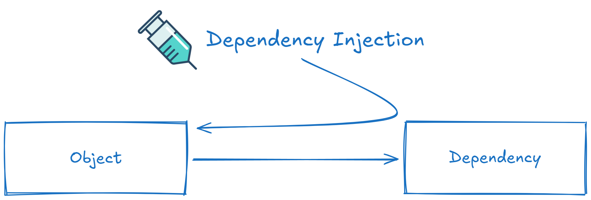

Dependency Injection#
Wstrzykiwanie zależności (DI) jest mechanizmem oddzielenia konstrukcji obiektu od jego użytkowania. Jest realizacją techniki Inversion of Control do zarządzania zależnościami. Odwraca realizację zależności poprzez przeniesienie drugorzędnej odpowiedzialności z obiektu do innego obiektu, dedykowanego do tych zadań, przez co zapewnia się zachowanie Zasady Pojedynczej Odpowiedzialności (SRP).
{kind=link}

W kontekście zarządzania zależnościami obiekt nie powinien być odpowiedzialny za samodzielne tworzenie zależności. Powinien przekazywać tę odpowiedzialność do innego “autorytarnego” mechanizmu, odwracając w ten sposób sterowanie (np. do kontenera IoC).
Przykład#
W konstruktorze klasy UserService definiowane są zależności od klas konkretnych. Nie ma możliwości zmiany implementacji usług wykorzystywanych przez instancję klasy bez zmiany implementacji konstruktora. Naruszona jest Zasada Otwarte/Zamknięte (OCP) oraz Zasada Pojedynczej Odpowiedzialności (SRP), ponieważ instancja UserService poza swoją podstawową odpowiedzialnością związaną z logiką biznesową, hermetyzuje również odpowiedzialność związaną z zarządzaniem zależnościami.
class UserService
{
private:
DbUsersGateway db_users_gateway_;
std::shared_ptr<MailingService> mailing_service_;
public:
UserService()
{
db_users_gateway_ = DbUsersGateway(AppManager::connection_string());
mailing_service_ = std::make_shared<MailingService>("smtp.gmail.com", 587, "admin", "password");
}
Result create_account(User user)
{
auto cmd_result = db_users_gateway_.insert(user);
if (cmd_result == CommandResult::Success)
{
mailing_service_->send_email(user.email, "User created", "User has been created successfully!!!");
Logger::instance().log("User(id: {}, name: {}) has been created", user.id, user.name);
return Result::Success;
}
Logger::instance().log("Failed to create User(id: {}, name: {})", user.id, user.name);
return Result::Failure;
}
};
Klasa UserService jest też słabo testowalna, ponieważ zależności są zdefiniowane statycznie i nie mamy możliwości podstawienia w ich miejsce obiektów pozorujących w celu odizolowania serwisu od bazy danych, serwisu wysyłającego maile i loggera.
Technika wstrzykiwania zależności stanowi alternatywny sposób organizowania kodu w celu uniknięcia ścisłego powiązania UserService z klasami zależnymi.
class UserService
{
private:
DbUsersGateway& db_users_gateway_;
std::shared_ptr<MailingService> mailing_service_;
Logger& logger_;
public:
UserService(DbUsersGateway& db_users_gateway, std::shared_ptr<MailingService> mailing_service, Logger& logger)
: db_users_gateway_(db_users_gateway), mailing_service_(mailing_service), logger_(logger)
{
}
Result create_account(User user)
{
auto cmd_result = db_users_gateway_.insert(user);
if (cmd_result == CommandResult::Success)
{
mailing_service_->send_email(user.email, "User created", "User has been created successfully!!!");
logger_.log("User(id: {}, name: {}) has been created", user.id, user.name);
return Result::Success;
}
logger_.log("Failed to create User(id: {}, name: {})", user.id, user.name);
return Result::Failure;
}
};
Po implementacji techniki DI klasa UserService spełnia zasady OCP i SRP oraz staje się łatwiej testowalna.